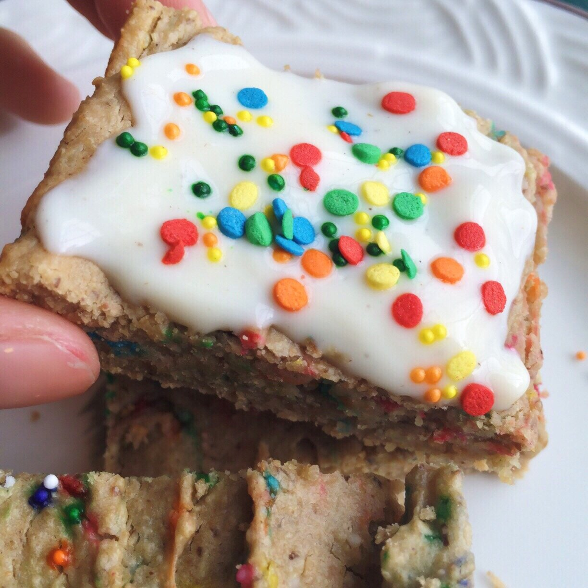
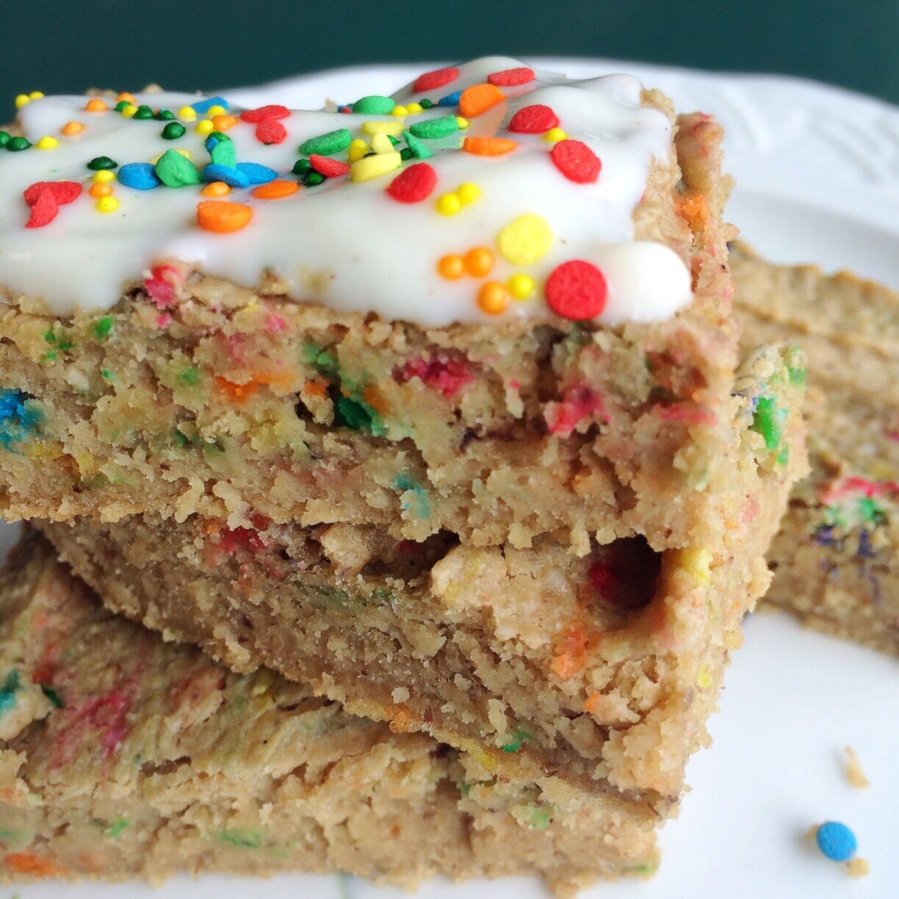

Vegan Funfetti Cake Bars (gluten free)


I'm just gonna start off by saying I legitimately ate half this pan of vegan funfetti cake bars when they came out of the oven. Yeah. They're that good. How can you not have fun with FUNfetti?! I'd argue it's the best cake flavor there is, no? This recipe is vegan, gluten free, and could even be made for a friend or family's birthday!
What am I celebrating, exactly? Well, for one, it's Wednesday! Half way through the week, woohoo! But the most exciting thing today is my first sale on Etsy! :3 I started making phone cases in my spare time and it's a fun little endeavor right now. It's nice creating personalized, unique packages for people. Very mom like ._. but I enjoy it so much.
I think these would be really awesome made as cupcakes! I certainly will be trying that soon. Do yourself a favor and add a little party break to your day. Try these out and let me know what you think!
Vegan Funfetti Cake Bars (gluten free)
Makes: 12 cake bars
-
1.5 cups rolled oats
-
1 TBSP ground flax
-
1 serving Nuzest (25 g) plant based protein
-
1/4 cup baking stevia
-
2 tsp baking powder
-
1 cup unsweetened almond milk
-
1/4 cup unsweetened applesauce
-
1/2 cup cashew butter (I use Crazy Richard’s brand!)
-
2-3 drops princess cake baking emulsion (Optional - I get it on Amazon)
-
Sprinkles!
-
Grind the oats into a flour. Then in a medium bowl, mix together the ground oats and the remaining ingredients. It'll be pretty thick .
-
Spray a 9×9 baking dish with nonstick spray and pour your batter in. Bake at 350 F for 22-25 mins.
-
Let cool 10 minutes then cut into 12 pieces. Enjoy!